终端基础
Visual Studio Code 包含一个功能齐全的集成终端，该终端从工作区的根目录启动。它与编辑器集成，支持诸如链接和错误检测等功能。集成终端可以像独立终端一样运行 mkdir 和 git 等命令。
[!NOTE]
当工作区处于受限模式时，打开终端会被阻止，以防止 shell 根据工作区内容自动执行代码。
您可以通过以下方式打开终端：
- 从菜单中使用终端 > 新建终端或视图 > 终端菜单命令。
- 从命令面板 (
kb(workbench.action.showCommands)) 中使用视图：切换终端命令。 - 在资源管理器中，您可以使用在集成终端中打开上下文菜单命令从文件夹打开新终端。
- 要切换终端面板，请使用
kb(workbench.action.terminal.toggleTerminal)键盘快捷键。 - 要创建新终端，请使用
kb(workbench.action.terminal.new)键盘快捷键。
VS Code 的终端有一项名为 shell 集成的附加功能，它通过命令左侧和滚动条中的装饰标记来跟踪命令运行的位置：
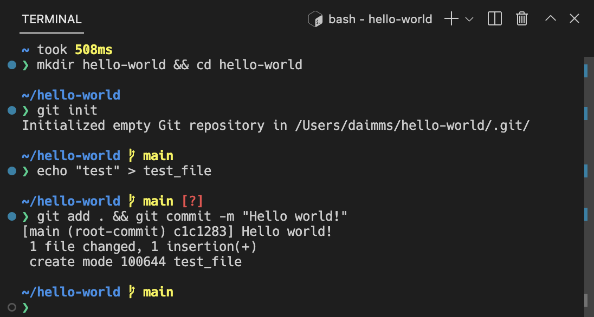
[!NOTE]
如果您更喜欢在 VS Code 外部工作，可以使用 kb(workbench.action.terminal.openNativeConsole) 键盘快捷键打开外部终端
终端 Shell
集成终端可以使用您机器上安装的各种 shell，默认 shell 从系统默认设置中获取。Shell 会被检测到并显示在终端配置文件下拉菜单中。

您可以在终端配置文件文章中了解更多关于配置终端 shell 的信息。
管理终端
终端选项卡用户界面位于终端视图的右侧。每个终端都有一个条目，包含其名称、图标、颜色和组装饰标记（如果有）。

通过选择终端面板右上角的 + 图标、从终端下拉菜单中选择配置文件或触发 kb(workbench.action.terminal.new) 命令来添加终端实例。此操作会在与该终端关联的选项卡列表中创建另一个条目。
通过悬停选项卡并选择垃圾桶按钮、选择选项卡项并按 kbstyle(Delete)、使用终端: 终止活动终端实例命令或通过右键单击上下文菜单来删除终端实例。
使用聚焦下一个 kb(workbench.action.terminal.focusNext) 和聚焦上一个 kb(workbench.action.terminal.focusPrevious) 在终端组之间导航。
当终端状态发生变化时，选项卡标签上终端标题的右侧可能会出现图标。一些示例包括：响铃（macOS）以及用于任务时，没有错误则显示勾选标记，有错误则显示 X。悬停图标可阅读状态信息，其中可能包含操作。
组（拆分窗格）
并排放置多个终端，并通过拆分终端来创建组：
- 悬停在右侧终端列表中的条目上，然后选择内联拆分按钮。
- 右键单击上下文菜单，然后选择拆分菜单选项。
kbstyle(Alt)并单击选项卡、+ 按钮或终端面板上的单个选项卡。- 触发
kb(workbench.action.terminal.split)命令。[!TIP]
新终端的工作目录取决于
setting(terminal.integrated.splitCwd)设置。
通过聚焦上一个窗格 kb(workbench.action.terminal.focusPreviousPane) 或下一个窗格 kb(workbench.action.terminal.focusNextPane) 在组内的终端之间导航。
在列表中拖放选项卡可以重新排列它们。将选项卡拖入主终端区域可以将终端从一个组移动到另一个组。
通过命令面板或右键单击上下文菜单中的终端：取消拆分终端命令，可以将终端移动到其自己的组中。
编辑器区域中的终端
您可以使用终端：在编辑器区域中创建新终端命令、终端：在编辑器区域中侧方创建新终端命令，或将终端从终端视图拖入编辑器区域，在编辑器区域中打开终端（终端编辑器）。终端编辑器会像常规编辑器选项卡一样显示：
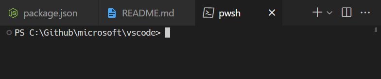
您可以使用编辑器组布局系统将终端编辑器放在任意一侧或以多维方式排列，例如，将 PowerShell 和 WSL 终端堆叠在文件编辑器的右侧：
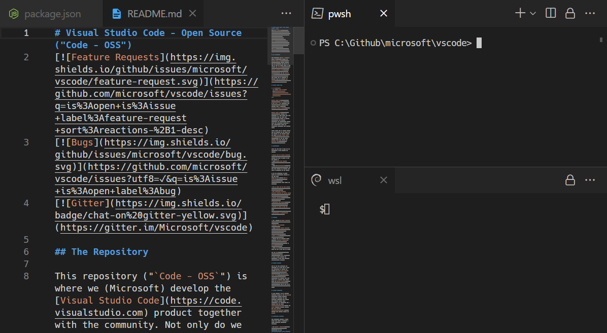
setting(terminal.integrated.defaultLocation) 设置可以更改终端的默认 view 或 editor 区域位置。
新窗口中的终端
有几种不同的方式可以在新的 VS Code 窗口中打开终端：
- 使用
kb(workbench.action.terminal.newInNewWindow) - 如果您有多个终端，则右键单击终端选项卡；如果只有一个终端，则左键单击选项卡，然后选择将终端移动到新窗口
- 选择在多个不同菜单中可用的新建终端窗口条目
缓冲区导航
终端中的内容称为缓冲区，底部视口上方的部分称为"回滚区域"。保留的回滚量由 setting(terminal.integrated.scrollback) 设置决定，默认值为 1000 行。
有多个可用于在终端缓冲区中导航的命令：
- 向上滚动一行 -
kb(workbench.action.terminal.scrollUp) - 向下滚动一行 -
kb(workbench.action.terminal.scrollDown) - 向上滚动一页 -
kb(workbench.action.terminal.scrollUpPage) - 向下滚动一页 -
kb(workbench.action.terminal.scrollDownPage) - 滚动到顶部 -
kb(workbench.action.terminal.scrollToTop) - 滚动到底部 -
kb(workbench.action.terminal.scrollToBottom)
命令导航也可用（参见 shell 集成）：
- 滚动到上一个命令 -
kb(workbench.action.terminal.scrollToPreviousCommand) - 滚动到下一个命令 -
kb(workbench.action.terminal.scrollToNextCommand)
滚动将即时发生，但可以通过 setting(terminal.integrated.smoothScrolling) 设置配置为在短时间内动画化滚动。
链接
终端具有复杂的链接检测功能，集成了编辑器，甚至支持扩展提供的链接处理器。将鼠标悬停在链接上会显示下划线，然后按住 kbstyle(Ctrl)/kbstyle(Cmd) 键并单击。
这些内置链接处理器按以下优先级顺序使用：
- URI/URL：外观像 URI 的链接，例如
https://code.visualstudio.com、vscode://path/to/file或file://path/to/file，将使用该协议的标准处理器打开。例如，https链接将打开浏览器。
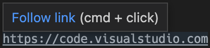
- 文件链接：指向已验证系统中存在的文件的链接。这些将在新编辑器选项卡中打开文件，并支持许多常见的行/列格式，如
file:1:2、file:line 1, column 2。
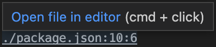
- 文件夹链接：指向文件夹的链接类似于文件链接，但将在该文件夹处打开一个新的 VS Code 窗口。
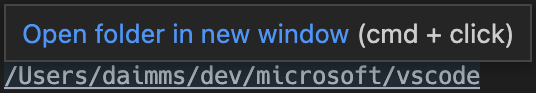
- 单词链接：回退链接类型，使用
setting(terminal.integrated.wordSeparators)设置。该设置定义单词边界，使几乎所有文本都成为单词。激活单词链接会在工作区中搜索该单词。如果只有一个结果，则会打开它；否则将显示搜索结果。单词链接被视为"低置信度"链接，除非您按住kbstyle(Ctrl)/kbstyle(Cmd)键，否则不会显示下划线或工具提示。它们对行和列后缀的支持也有限。
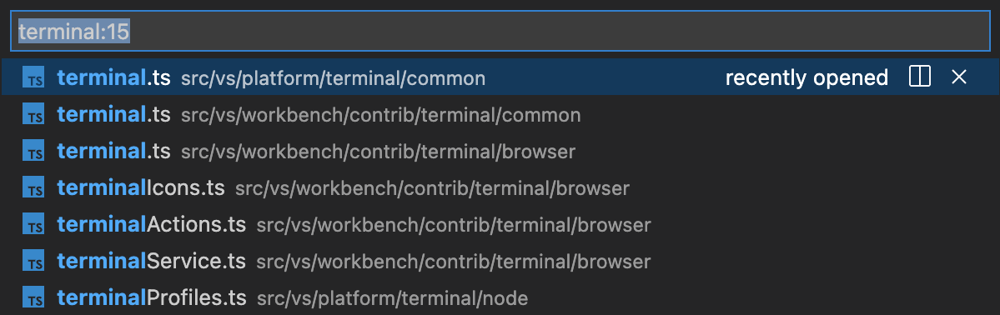
打开检测到的链接命令 (kb(workbench.action.terminal.openDetectedLink)) 可用于通过键盘访问链接：
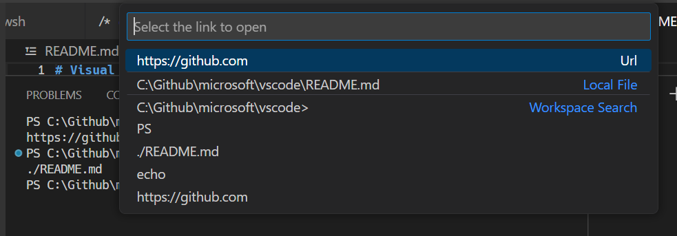
[!TIP]
如果链接验证导致性能问题，例如在高延迟远程环境中，请通过 setting(terminal.integrated.enableFileLinks) 设置禁用它。
扩展处理链接
扩展可以提供链接提供程序，允许扩展定义单击时会发生什么。一个例子是 GitLens 扩展检测 Git 分支链接。
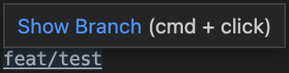
键盘可访问性
链接可以通过多个命令进行键盘访问，这些命令根据链接类型打开链接。
- 终端：打开最后一个本地文件链接 - 打开最近的本地文件链接。无默认键盘快捷键。
- 终端：打开最后一个 URL 链接 - 打开最近的 URI/URL 链接。无默认键盘快捷键。
- 终端：打开检测到的链接... - 打开一个可搜索的快速选择器，包含所有检测到的链接，包括单词链接。默认键盘快捷键是
kbstyle(Ctrl/Cmd+Shift+O)，与转到编辑器中的符号键盘快捷键相同。复制和粘贴
复制和粘贴的键盘快捷键遵循平台标准：
- Linux:
kbstyle(Ctrl+Shift+C)和kbstyle(Ctrl+Shift+V)；选择粘贴可使用kbstyle(Shift+Insert) - macOS:
kbstyle(Cmd+C)和kbstyle(Cmd+V) - Windows:
kbstyle(Ctrl+C)和kbstyle(Ctrl+V)
当选中的 setting(terminal.integrated.copyOnSelection) 启用时，选择内容会自动复制。
默认情况下，粘贴多行时会出现警告，这可以通过 setting(terminal.integrated.enableMultiLinePasteWarning) 设置禁用。这只会在 shell 不支持"括号粘贴模式"时发生。当该模式启用时，shell 表明它可以处理多行粘贴。
使用鼠标
右键单击行为
右键单击行为因平台而异：
- Linux: 显示上下文菜单。
- macOS: 选择光标下的单词并显示上下文菜单。
- Windows: 如果有选择则复制并取消选择，否则粘贴。
这可以使用 setting(terminal.integrated.rightClickBehavior) 设置进行配置。选项有：
default- 显示上下文菜单。copyPaste- 有选择时复制，否则粘贴。paste- 右键单击时粘贴。selectWord- 选择光标下的单词并显示上下文菜单。nothing- 不执行任何操作并将事件传递给终端。列选择
按下 kbstyle(Alt) 并左键拖动，可以在终端内部选择文本矩形区域，而不是正常的行选择。
使用 Alt 重新定位光标
kbstyle(Alt) 和左键单击将把光标重新定位到鼠标下方。这是通过模拟箭头键击来实现的，可能对某些 shell 或程序不可靠。此功能可以通过 setting(terminal.integrated.altClickMovesCursor) 设置禁用。
鼠标事件模式
当终端中运行的应用程序开启鼠标事件模式时（例如 Vim 鼠标模式），鼠标交互将发送到应用程序而不是终端。这意味着单击和拖动将不再创建选择。在 Windows 和 Linux 上，可以通过按住 kbstyle(Alt) 键强制进行终端选择；在 macOS 上也可以通过 kbstyle(Option) 键实现，但需要先启用 setting(terminal.integrated.macOptionClickForcesSelection) 设置。
查找
集成终端具有查找功能，可以通过 kb(workbench.action.terminal.focusFind) 触发。
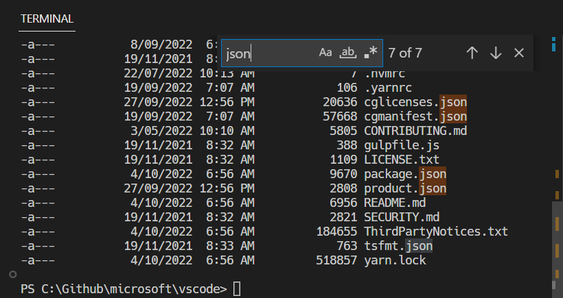
[!TIP]
可以通过从跳过 shell 的命令中删除workbench.action.terminal.focusFind命令，将kbstyle(Ctrl+F)发送给 shell。
运行选中的文本
要使用 runSelectedText 命令，在编辑器中选择文本，然后通过命令面板 (kb(workbench.action.showCommands)) 运行命令终端：在活动终端中运行选中的文本，终端将尝试运行选中的文本。如果活动编辑器中没有选中文本，则光标所在的整行将在终端中运行。
[!TIP]
也可以使用命令 workbench.action.terminal.runActiveFile 运行活动文件。
最大化终端
可以通过单击带有向上箭头图标的最大化面板大小按钮来最大化终端视图。这将暂时隐藏编辑器并最大化面板。这对于临时关注大量输出非常有用。一些开发人员通过打开新窗口、最大化面板并隐藏侧边栏来将 VS Code 用作独立终端。
请注意，面板只有在对齐方式选项设置为居中时才能被最大化。
全选
有一个终端：全选命令，在 macOS 上绑定到 kbstyle(Cmd+A)，但在 Windows 和 Linux 上没有默认键盘快捷键，因为它可能与 shell 快捷键冲突。要使用 kbstyle(Ctrl+A) 全选，请添加此自定义键盘快捷键：
{
"key": "ctrl+a",
"command": "workbench.action.terminal.selectAll",
"when": "terminalFocus && !isMac"
},拖放文件路径
将文件拖入终端会将路径输入到终端中，并进行转义以匹配活动 shell。
使用任务自动化终端
任务功能可用于自动化终端的启动，例如，以下 .vscode/tasks.json 文件将在窗口启动时在单个终端组中启动一个命令提示符和 PowerShell 终端：
{
"version": "2.0.0",
"presentation": {
"echo": false,
"reveal": "always",
"focus": false,
"panel": "dedicated",
"showReuseMessage": true
},
"tasks": [
{
"label": "Create terminals",
"dependsOn": [
"First",
"Second"
],
// Mark as the default build task so cmd/ctrl+shift+b will create them
"group": {
"kind": "build",
"isDefault": true
},
// Try start the task on folder open
"runOptions": {
"runOn": "folderOpen"
}
},
{
// The name that shows up in terminal tab
"label": "First",
// The task will launch a shell
"type": "shell",
"command": "",
// Set the shell type
"options": {
"shell": {
"executable": "cmd.exe",
"args": []
}
},
// Mark as a background task to avoid the spinner animation on the terminal tab
"isBackground": true,
"problemMatcher": [],
// Create the tasks in a terminal group
"presentation": {
"group": "my-group"
}
},
{
"label": "Second",
"type": "shell",
"command": "",
"options": {
"shell": {
"executable": "pwsh.exe",
"args": []
}
},
"isBackground": true,
"problemMatcher": [],
"presentation": {
"group": "my-group"
}
}
]
}此文件可以提交到仓库以与其他开发人员共享，或通过 workbench.action.tasks.openUserTasks 命令创建为用户任务。
工作目录
默认情况下，终端将在资源管理器中打开的文件夹处打开。setting(terminal.integrated.cwd) 设置允许指定自定义路径来替代：
{
"terminal.integrated.cwd": "/home/user"
}Windows 上的拆分终端将在父终端启动的目录中启动。在 macOS 和 Linux 上，拆分终端将继承父终端的当前工作目录。可以使用 setting(terminal.integrated.splitCwd) 设置更改此行为：
{
"terminal.integrated.splitCwd": "workspaceRoot"
}还有一些扩展可以提供更多选项，例如 Terminal Here。
固定尺寸终端
终端：设置固定尺寸命令允许更改终端及其后台伪终端使用的列数和行数。必要时将添加滚动条，这可能导致不愉快的用户体验，通常不建议这样做，但在 Windows 上，当分页工具不可用时，这是读取日志或长行的常见需求。
您也可以右键单击终端选项卡并选择切换大小到内容宽度 (kb(workbench.action.terminal.sizeToContentWidth)) 将终端列数调整为终端中最长换行行的宽度。
GitHub Copilot 在终端中的应用
如果您有 GitHub Copilot 的访问权限，您可以使用它来获得 AI 驱动的终端命令和 shell 脚本帮助。有几种在终端中使用 Copilot 的方式：
终端内联聊天
直接在终端中启动内联聊天以获取 shell 命令的帮助：
- 打开终端 (
kb(workbench.action.terminal.toggleTerminal)) - 按
kb(workbench.action.terminal.chat.start)或从命令面板运行终端内联聊天命令 - 用自然语言输入您的问题或请求，例如：
- "如何查找此目录中最大的文件？"
- "告诉我如何撤销最后一次 git 提交"
- "创建一个用于分析日志文件的 bash 脚本"
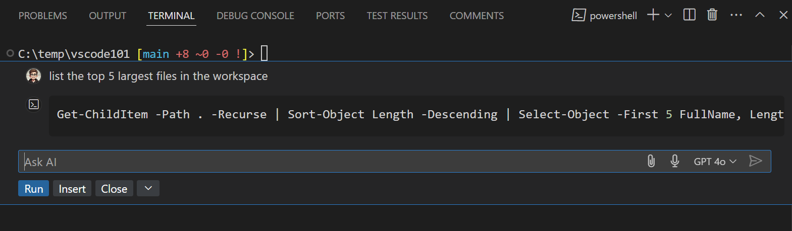
当 Copilot 提供回复时，您可以选择运行直接执行命令，或选择插入将其添加到终端中以供进一步编辑。
有关在终端中使用 GitHub Copilot 的更多信息，请参阅使用终端内联聊天。
终端聊天参与者
在聊天中使用专用的 @terminal 聊天参与者来询问有关终端命令、shell 脚本或解释终端输出的问题：
- 打开聊天视图 (
kb(workbench.action.chat.open)) - 在问题前加上
@terminal以将其导向终端参与者 - 询问有关终端命令、shell 脚本或解释终端输出的问题
示例：
@terminal 列出此工作区中 5 个最大的文件@terminal /explain top shell 命令@terminal 如何递归地 grep 查找模式在聊天中引用终端上下文
您可以在聊天提示中包含终端信息作为上下文：
- 使用
#terminalSelection将终端中选中的文本添加到聊天提示中 - 使用
#terminalLastCommand包含您在终端中运行的上一个命令后续步骤
本文档已涵盖终端的基础知识。请继续阅读以下内容了解更多：
- 终端内联聊天 - 在终端中直接获得 AI 驱动的建议。
- 任务 - 任务使您能够与外部工具集成并大量利用终端。
- 精通 VS Code 的终端 - 一个包含大量终端高级用户技巧的外部博客。
- 通过在 VS Code 中浏览键盘快捷键来探索终端命令（首选项：打开键盘快捷方式然后搜索 "terminal"）。
常见问题
我在启动终端时遇到问题
针对此类问题有一份专门的故障排除指南。
如何创建管理员终端？
集成终端 shell 使用 VS Code 的权限运行。如果您需要以提升的（管理员）或不同的权限运行 shell 命令，请在终端内使用 runas.exe 等平台实用工具。
您可以在配置配置文件中了解更多关于通过终端配置文件自定义终端的信息。
我能为资源管理器的"在集成终端中打开"命令添加快捷键吗？
您可以通过资源管理器中的在集成终端中打开上下文菜单命令为特定文件夹打开新终端。
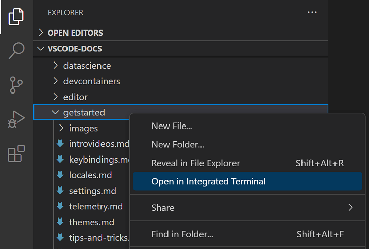
默认情况下，在集成终端中打开没有关联的键盘快捷键，但您可以通过键盘快捷方式编辑器 (kb(workbench.action.openGlobalKeybindings)) 添加自己的快捷键，将键盘快捷键添加到 keybindings.json 中。
下面的 keybindings.json 示例为 openInTerminal 添加了键盘快捷键 kbstyle(Ctrl+T)。
{
"key": "ctrl+t",
"command": "openInTerminal",
"when": "filesExplorerFocus"
}为什么 nvm 在集成终端启动时抱怨前缀选项？
nvm（Node Version Manager）用户经常在 VS Code 的集成终端中首次看到此错误：
nvm is not compatible with the npm config "prefix" option: currently set to "/usr/local"
Run `npm config delete prefix` or `nvm use --delete-prefix v8.9.1 --silent` to unset it这主要是 macOS 的问题，在外部终端中不会发生。造成此问题的常见原因如下：
npm是使用路径中其他位置的另一个node实例（例如/usr/local/bin/npm）全局安装的。- 为了在
$PATH上获取开发工具，VS Code 会在启动时启动一个 bash 登录 shell。这意味着您的~/.bash_profile已经运行过，当集成终端启动时，它将运行另一个登录 shell，可能以意想不到的方式重新排列$PATH。
要解决此问题，您需要找到旧 npm 的安装位置，并删除它及其过时的 node_modules。找到 nvm 初始化脚本，并在其运行之前运行 which npm，当您启动新终端时应该打印出路径。
获得 npm 路径后，通过类似以下命令解析符号链接来找到旧的 node_modules：
ls -la /usr/local/bin | grep "np[mx]"这将在末尾给出解析后的路径：
... npm -> ../lib/node_modules/npm/bin/npm-cli.js
... npx -> ../lib/node_modules/npm/bin/npx-cli.js然后，删除文件并重新启动 VS Code 应该可以解决此问题：
rm /usr/local/bin/npm /usr/local/lib/node_modules/npm/bin/npm-cli.js
rm /usr/local/bin/npx /usr/local/lib/node_modules/npm/bin/npx-cli.js为什么调整终端拆分窗格大小时 macOS 会发出叮当声？
键盘快捷键 ⌃⌘← 和 ⌃⌘→ 是在终端中调整各个拆分窗格大小的默认快捷键。虽然它们可以正常工作，但由于 Chromium 的一个问题，它们也会导致系统发出"无效键"的声音。推荐的解决方法是告诉 macOS 对这些键盘快捷键不执行任何操作，方法是在终端中运行以下命令：
mkdir -p ~/Library/KeyBindings
cat > ~/Library/KeyBindings/DefaultKeyBinding.dict <<EOF
{
"@^\UF700" = "noop:";
"@^\UF701" = "noop:";
"@^\UF702" = "noop:";
"@^\UF703" = "noop:";
"@~^\UF700" = "noop:";
"@~^\UF701" = "noop:";
"@~^\UF702" = "noop:";
"@~^\UF703" = "noop:";
}
EOF我在终端渲染方面遇到问题。我能做什么？
默认情况下，集成终端将在大多数机器上使用 GPU 加速进行渲染。通常，当出现渲染问题时，是硬件/操作系统/驱动程序中某些内容与 GPU 渲染器不兼容的问题。首先要尝试的是禁用 GPU 加速，以渲染速度为代价换取更可靠的基于 DOM 的渲染：
{
"terminal.integrated.gpuAcceleration": "off"
}有关更多信息，请参阅 GPU 加速部分。
粘贴时我看到 1~ 或 [201~
这通常意味着终端内运行的程序/shell 请求开启"括号粘贴模式"，但某些东西不支持它。要解决此问题，您可以运行 printf "\e[?2004l" 来禁用该会话的模式，或者将以下内容添加到您的 ~/.inputrc 文件中：
set enable-bracketed-paste off或者，可以通过使用以下设置关闭括号粘贴模式来强制忽略 shell 的请求：
{
"terminal.integrated.ignoreBracketedPasteMode": true
}Ctrl+A、Ctrl+R 在 zsh 上输出 ^A、^R
如果 zsh 处于 Vim 模式而不是 Emacs 模式，可能会发生这种情况，原因是在初始化脚本中将 $EDITOR 或 $VISUAL 设置为 vi/vim。
要解决此问题，您有两个选择：
- 确保不要将
$EDITOR设置为vi(m)。但是，如果您希望 Git 编辑器正常工作，这不可行。 - 在初始化脚本中添加
bindkey -e以显式设置为 Emacs 模式。如何配置 Cmd+. 映射到 Ctrl+C，像 macOS 内置终端一样？
macOS 默认终端使用 kbstyle(Cmd+.) 执行与 kbstyle(Ctrl+C) 相同的操作。要在 VS Code 中获得此行为，请添加此自定义键盘快捷键：
{
"key": "cmd+.",
"command": "workbench.action.terminal.sendSequence",
"when": "terminalFocus",
"args": { "text": "" }
}为什么终端中的颜色不正确？
我们默认启用的一项辅助功能是确保前景文本满足至少 4.5 的最小对比度。此功能确保无论使用什么 shell 和主题，文本都可读，否则无法做到。要禁用此功能，您可以设置：
"terminal.integrated.minimumContrastRatio": 1有关更多信息，请参阅最小对比度部分。